Phylogenetics IV
Evolutionary rates, coalescent, and phylogeography
Public Health Modeling Unit
2025-09-02
Barney Isaksen Potter
Series overview
- Trees, tree likelihoods, and models of evolution
- Rate heterogeneity and maximum likelihood
- Bayesian phylogenetics, Markov chain Monte Carlo, and summary trees
- Evolutionary rates, coalescent, and phylogeography
Phylodynamics
The concurrent study of evolutionary and epidemiological dynamics which take place at the same time scale.
Measurably evolving populations
Populations for which we are able to observe the rate and magnitude of evolutionary processes through time.
- Populations that evolve so rapidly relative to their sampling times that we can observe evolution at the time scale it takes place (e.g. RNA viruses).
- Populations that have been well enough preserved that we can sample them effectively through their evolutionary history
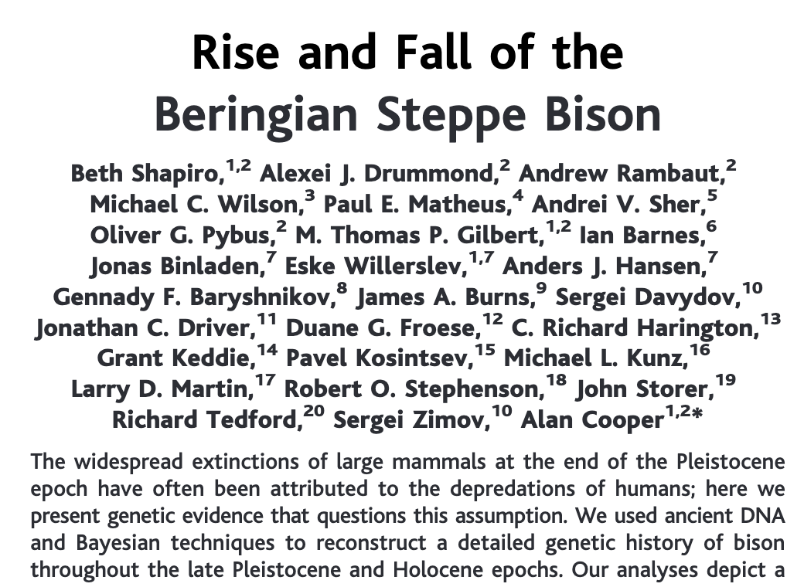
Science, vol 306, Nov 2004
Why does this matter?
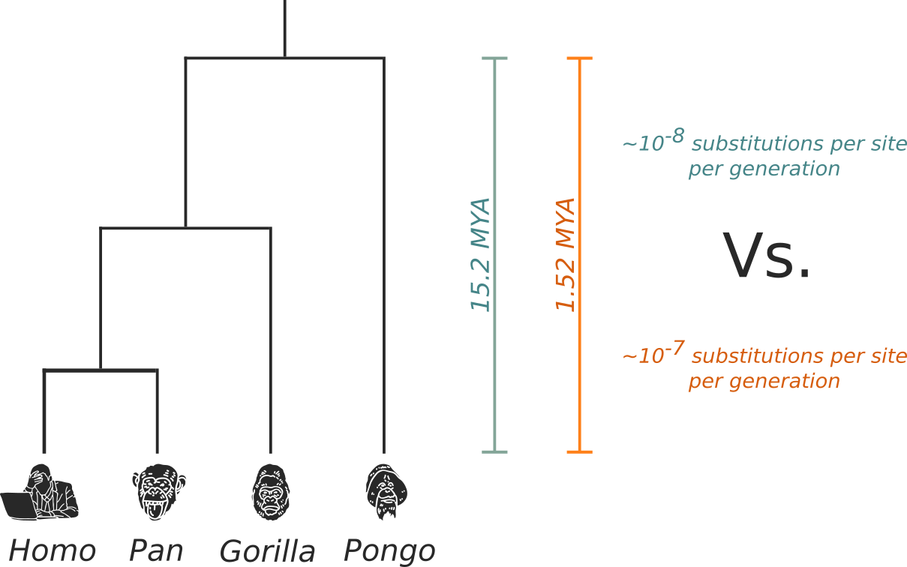
How to add evolutionary rate information in the absence of temporal signal (priors)
- Evolutionary rate prior taken from literature
- Clade tMRCA calibration prior derived from the fossil record
What is the coalescent?
Population genetic model that relates the structure of a phylogeny with the underlying population's demographic structure/history.
Idealized Wright-Fisher population:
- Non-overlapping (discrete) generations
- Constant population size through time
- No selection
- Panmixia
Probability that two lineages coalesce
\[
P_{coal} = \frac{1}{N}
\]
\[
P_{coal}(t) = \left( 1 - \frac{1}{N} \right)^{t-1} \times \left( \frac{1}{N} \right)
\]
Total population size: $N$
Probability that two lineages coalesce
\[
P_{coal}(t) = \frac{1}{N} e^{\frac{t-1}{N}}
\]
\[
\implies \mathbb{E}(P_{coal}(t)) = N
\]
When $N$ is large.
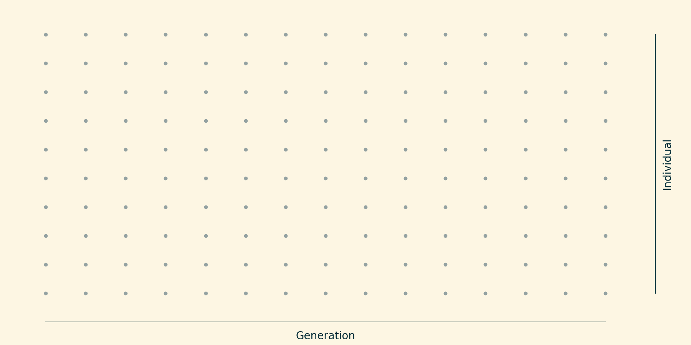
Idealized population over 10 generations; $N=10$.
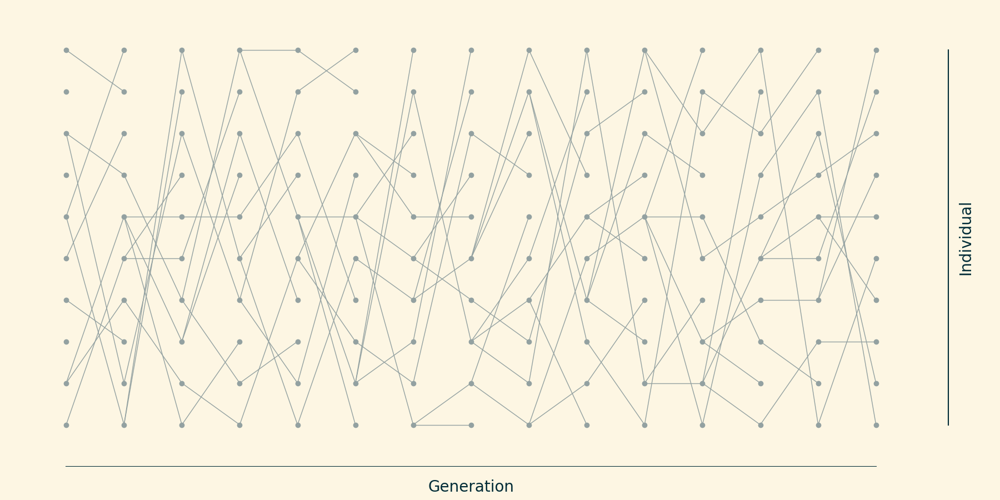
Each individual "chooses" its ancestor at random.
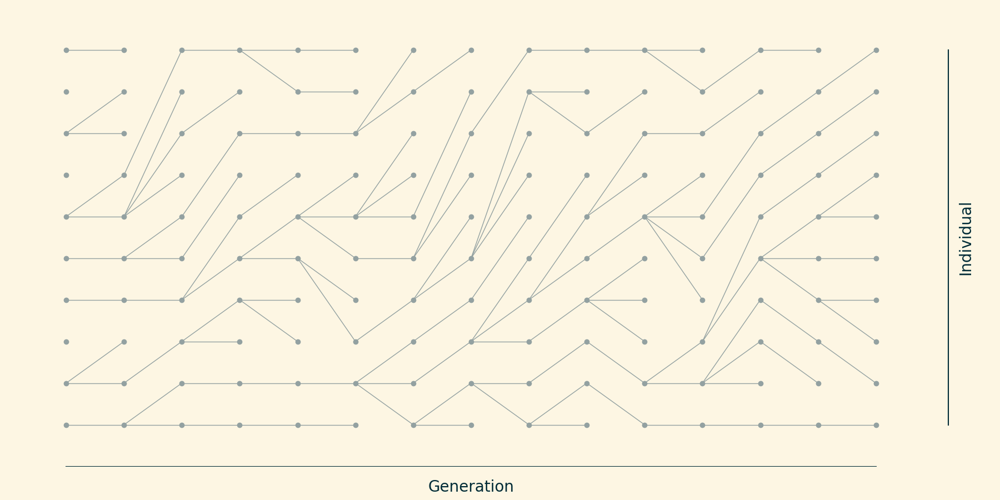
(Sort things so they look nice)
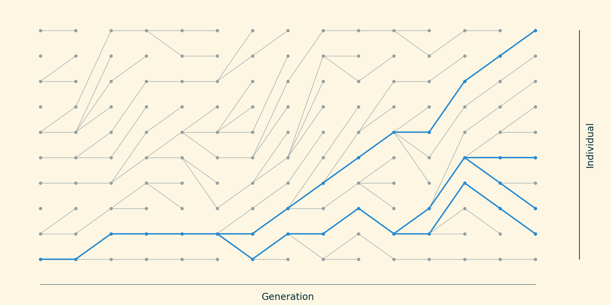
Trace the ancestry of 4 taxa backwards in time.
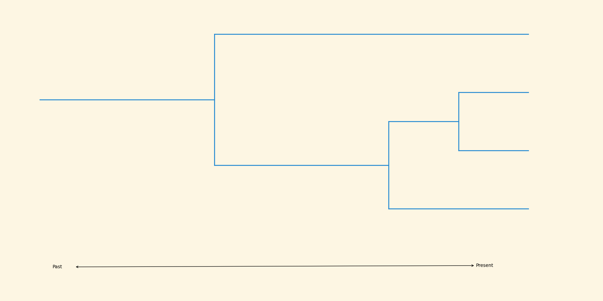
This process yields a phylogeny.
Let's relax the assumption that the population size must be constant.
Different population structures give rise to different tree shapes
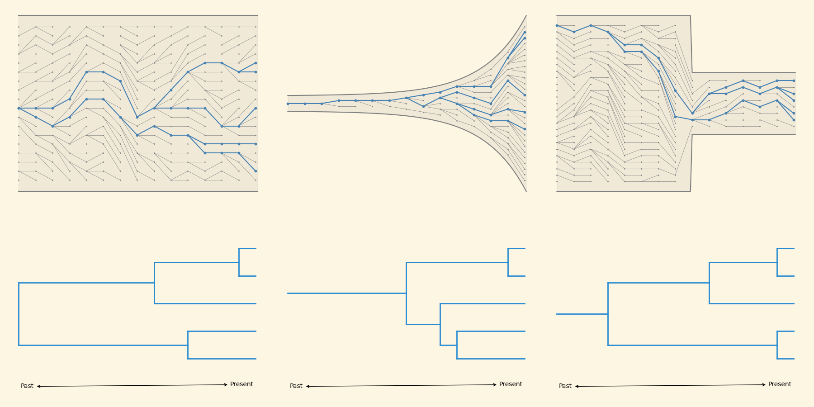
Now we can invert the process to infer demography from the phylogeny.
(skyline plots)
Skyline inference
The rate of coalescence is given by:
\[
\lambda_n = \frac{\binom{n}{2}}{N}
\]
$n$ is the number of lineages present before coalescence.
Skyline inference
The waiting time until the next coalescence is exponentially distributed:
\[
P(w_n) = \lambda_n e^{-\lambda_n w_n}
\]
Skyline inference
For a given tree, we can define a set of intercoalescent intervals $I_2, I_3, \dots, I_m$, where m is the number of lineages present in each interval.
Skyline inference
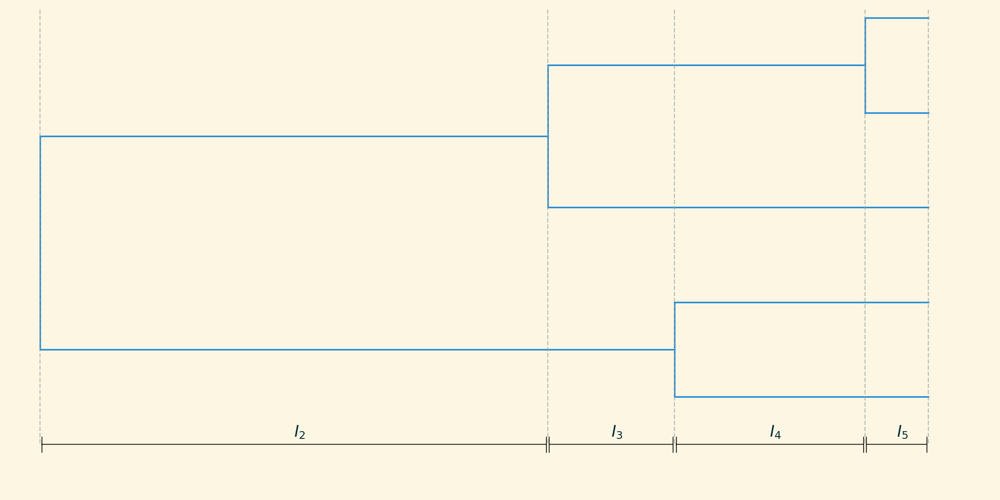
Skyline inference
The demographic history can be approximated as piecewise constant $M_2, M_3, \dots, M_m$:
\[
\hat{M}_n = \hat{w}_n \frac{n(n-1)}{2}
\]
where $\hat{w}_n$ is the width of the interval.
Skyline inference
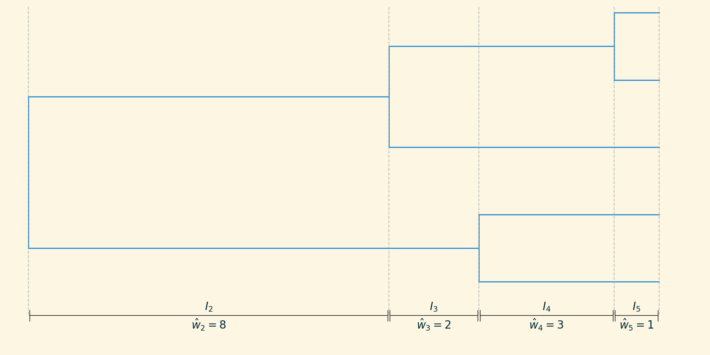
Skyline inference
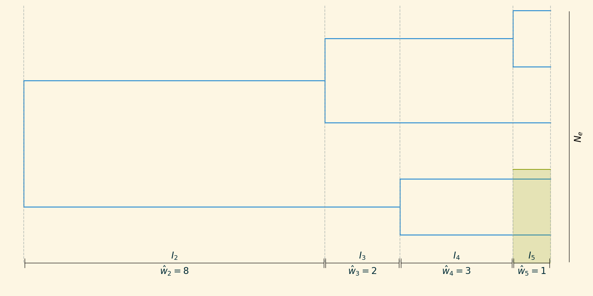
Skyline inference
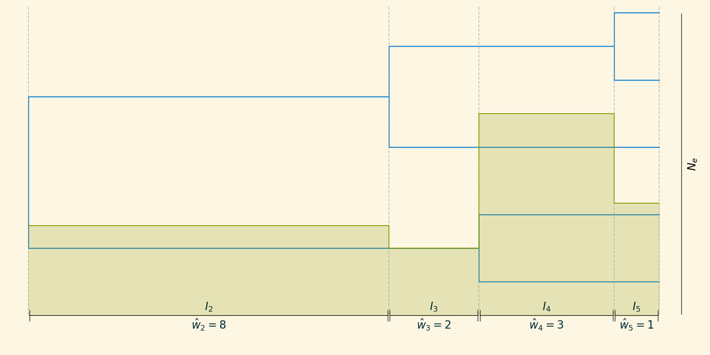
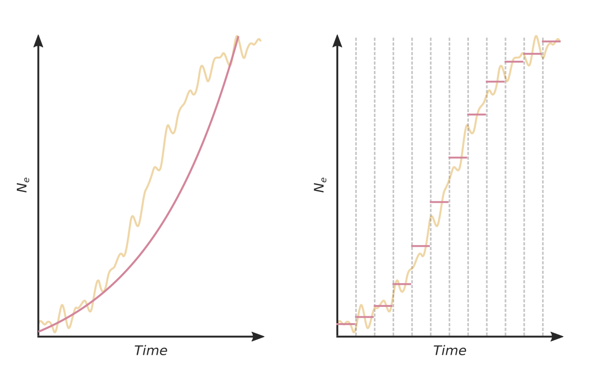
(discrete) Phylogeography
Phylogenies help us understand spatiotemporal spread
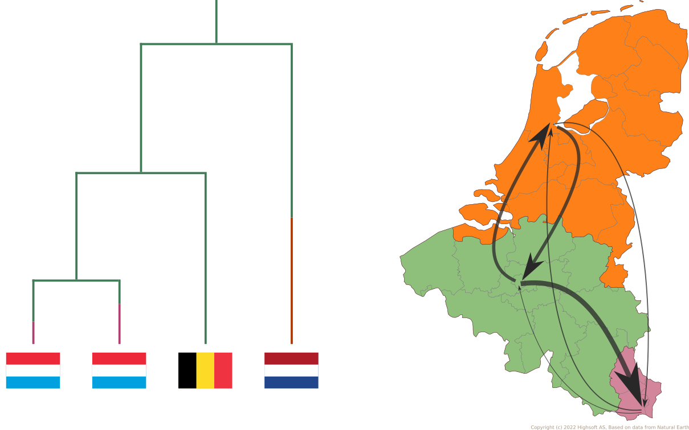
It is the same CTMC model!
(except now we typically call the rate matrix $\Lambda$)
(also, this can be extraordinarily slow)
Bayesian Stochastic Search Variable Selection (BSSVS)
\[
\Lambda=\{ \lambda_{ij} \} \rightarrow \{ \delta_{ij} \lambda_{ij} \}
\]
where $\delta_{ij} \in \{ 0, 1 \}$.
Phylogeographic GLM
Useful for determining which potential predictors $k \in K$ best explain observed phylogeographic diffusion between locations $i,j \in N$.
Phylogeographic GLM
- $\mathbf{X}^{(k)}$: predictor matrix $k$
- E.g. distance, relative population
- $\delta^{(k)*}$: indicators for inclusion of predictor $k$
- $\beta^{(k)}$: unknown coefficients for predictor $k$
- $\epsilon_i$: location-specific effect for $i$
$*$ not the same $\delta$ as was used in BSSVS.
Phylogeographic GLM
\[
log(\Lambda_{ij}) = \sum_{k \in K} \mathbf{X}_{ij}^{(k)} \delta^{(k)} \beta^{(k)} + \epsilon_i + \epsilon_j
\]